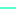

<!doctype html>
<html lang="en">
    <head>
        <meta charset="utf-8">
        <meta http-equiv="X-UA-Compatible" content="IE=edge">
        <meta name="viewport" content="initial-scale=1,user-scalable=no,maximum-scale=1,width=device-width">
        <meta name="mobile-web-app-capable" content="yes">
        <meta name="apple-mobile-web-app-capable" content="yes">
        <link rel="stylesheet" href="css/leaflet.css">
        <link rel="stylesheet" href="css/L.Control.Layers.Tree.css">
        <link rel="stylesheet" href="css/qgis2web.css">
        <link rel="stylesheet" href="css/fontawesome-all.min.css">
        <link rel="stylesheet" href="css/leaflet.photon.css">
        <link rel="stylesheet" href="css/leaflet-measure.css">
        <style>
        html, body, #map {
            width: 100%;
            height: 100%;
            padding: 0;
            margin: 0;
        }
        </style>
        <title></title>
    </head>
    <body>
        <div id="map">
        </div>
        <script src="js/qgis2web_expressions.js"></script>
        <script src="js/leaflet.js"></script>
        <script src="js/L.Control.Layers.Tree.min.js"></script>
        <script src="js/multi-style-layer.js"></script>
        <script src="js/leaflet.rotatedMarker.js"></script>
        <script src="js/leaflet.pattern.js"></script>
        <script src="js/leaflet-hash.js"></script>
        <script src="js/Autolinker.min.js"></script>
        <script src="js/rbush.min.js"></script>
        <script src="js/labelgun.min.js"></script>
        <script src="js/labels.js"></script>
        <script src="js/leaflet.photon.js"></script>
        <script src="js/leaflet-measure.js"></script>
        <script src="data/ne_10m_coastline_4.js"></script>
        <script src="data/routs_5.js"></script>
        <script src="data/fields_6.js"></script>
        <script>
        var highlightLayer;
        function highlightFeature(e) {
            highlightLayer = e.target;
            highlightLayer.openPopup();
        }
        var map = L.map('map', {
            zoomControl:false, maxZoom:28, minZoom:6
        }).fitBounds([[59.401424812207935,6.682823635187741],[78.40092261640486,84.8871519354533]]);
        var hash = new L.Hash(map);
        map.attributionControl.setPrefix('<a href="https://github.com/tomchadwin/qgis2web" target="_blank">qgis2web</a> &middot; <a href="https://leafletjs.com" title="A JS library for interactive maps">Leaflet</a> &middot; <a href="https://qgis.org">QGIS</a>');
        var autolinker = new Autolinker({truncate: {length: 30, location: 'smart'}});
        // remove popup's row if "visible-with-data"
        function removeEmptyRowsFromPopupContent(content, feature) {
         var tempDiv = document.createElement('div');
         tempDiv.innerHTML = content;
         var rows = tempDiv.querySelectorAll('tr');
         for (var i = 0; i < rows.length; i++) {
             var td = rows[i].querySelector('td.visible-with-data');
             var key = td ? td.id : '';
             if (td && td.classList.contains('visible-with-data') && feature.properties[key] == null) {
                 rows[i].parentNode.removeChild(rows[i]);
             }
         }
         return tempDiv.innerHTML;
        }
        // add class to format popup if it contains media
		function addClassToPopupIfMedia(content, popup) {
			var tempDiv = document.createElement('div');
			tempDiv.innerHTML = content;
			if (tempDiv.querySelector('td img')) {
				popup._contentNode.classList.add('media');
					// Delay to force the redraw
					setTimeout(function() {
						popup.update();
					}, 10);
			} else {
				popup._contentNode.classList.remove('media');
			}
		}
        var zoomControl = L.control.zoom({
            position: 'topleft'
        }).addTo(map);
        var measureControl = new L.Control.Measure({
            position: 'topleft',
            primaryLengthUnit: 'meters',
            secondaryLengthUnit: 'kilometers',
            primaryAreaUnit: 'sqmeters',
            secondaryAreaUnit: 'hectares'
        });
        measureControl.addTo(map);
        document.getElementsByClassName('leaflet-control-measure-toggle')[0].innerHTML = '';
        document.getElementsByClassName('leaflet-control-measure-toggle')[0].className += ' fas fa-ruler';
        var bounds_group = new L.featureGroup([]);
        function setBounds() {
            map.setMaxBounds(map.getBounds());
        }
        map.createPane('pane_OSMStandard_0');
        map.getPane('pane_OSMStandard_0').style.zIndex = 400;
        var layer_OSMStandard_0 = L.tileLayer('http://tile.openstreetmap.org/{z}/{x}/{y}.png', {
            pane: 'pane_OSMStandard_0',
            opacity: 1.0,
            attribution: '<a href="https://www.openstreetmap.org/copyright">© OpenStreetMap contributors, CC-BY-SA</a>',
            minZoom: 6,
            maxZoom: 28,
            minNativeZoom: 0,
            maxNativeZoom: 19
        });
        layer_OSMStandard_0;
        map.addLayer(layer_OSMStandard_0);
        map.createPane('pane_F4Map2D_1');
        map.getPane('pane_F4Map2D_1').style.zIndex = 401;
        var layer_F4Map2D_1 = L.tileLayer('https://tile1.f4map.com/tiles/f4_2d/{z}/{x}/{y}.png', {
            pane: 'pane_F4Map2D_1',
            opacity: 1.0,
            attribution: '',
            minZoom: 6,
            maxZoom: 28,
        });
        layer_F4Map2D_1;
        map.addLayer(layer_F4Map2D_1);
        map.createPane('pane_CartoDark_2');
        map.getPane('pane_CartoDark_2').style.zIndex = 402;
        var layer_CartoDark_2 = L.tileLayer('https://a.basemaps.cartocdn.com/dark_all/{z}/{x}/{y}.png', {
            pane: 'pane_CartoDark_2',
            opacity: 1.0,
            attribution: '',
            minZoom: 6,
            maxZoom: 28,
        });
        layer_CartoDark_2;
        map.addLayer(layer_CartoDark_2);
        map.createPane('pane_CartoDark_3');
        map.getPane('pane_CartoDark_3').style.zIndex = 403;
        var layer_CartoDark_3 = L.tileLayer('https://a.basemaps.cartocdn.com/dark_all/{z}/{x}/{y}.png', {
            pane: 'pane_CartoDark_3',
            opacity: 1.0,
            attribution: '',
            minZoom: 6,
            maxZoom: 28,
        });
        layer_CartoDark_3;
        map.addLayer(layer_CartoDark_3);
        function pop_ne_10m_coastline_4(feature, layer) {
            layer.on({
                mouseout: function(e) {
                    if (typeof layer.closePopup == 'function') {
                        layer.closePopup();
                    } else {
                        layer.eachLayer(function(feature){
                            feature.closePopup()
                        });
                    }
                },
                mouseover: highlightFeature,
            });
            var popupContent = '<table>\
                    <tr>\
                        <td colspan="2">' + (feature.properties['featurecla'] !== null ? autolinker.link(String(feature.properties['featurecla']).replace(/'/g, '\'').toLocaleString()) : '') + '</td>\
                    </tr>\
                    <tr>\
                        <td colspan="2">' + (feature.properties['scalerank'] !== null ? autolinker.link(String(feature.properties['scalerank']).replace(/'/g, '\'').toLocaleString()) : '') + '</td>\
                    </tr>\
                    <tr>\
                        <td colspan="2">' + (feature.properties['min_zoom'] !== null ? autolinker.link(String(feature.properties['min_zoom']).replace(/'/g, '\'').toLocaleString()) : '') + '</td>\
                    </tr>\
                </table>';
            var content = removeEmptyRowsFromPopupContent(popupContent, feature);
			layer.on('popupopen', function(e) {
				addClassToPopupIfMedia(content, e.popup);
			});
			layer.bindPopup(content, { maxHeight: 400 });
        }

        function style_ne_10m_coastline_4_0() {
            return {
                pane: 'pane_ne_10m_coastline_4',
                opacity: 1,
                color: 'rgba(255,186,0,1.0)',
                dashArray: '',
                lineCap: 'square',
                lineJoin: 'bevel',
                weight: 1.0,
                fillOpacity: 0,
                interactive: true,
            }
        }
        map.createPane('pane_ne_10m_coastline_4');
        map.getPane('pane_ne_10m_coastline_4').style.zIndex = 404;
        map.getPane('pane_ne_10m_coastline_4').style['mix-blend-mode'] = 'normal';
        var layer_ne_10m_coastline_4 = new L.geoJson(json_ne_10m_coastline_4, {
            attribution: '',
            interactive: true,
            dataVar: 'json_ne_10m_coastline_4',
            layerName: 'layer_ne_10m_coastline_4',
            pane: 'pane_ne_10m_coastline_4',
            onEachFeature: pop_ne_10m_coastline_4,
            style: style_ne_10m_coastline_4_0,
        });
        bounds_group.addLayer(layer_ne_10m_coastline_4);
        map.addLayer(layer_ne_10m_coastline_4);
        function pop_routs_5(feature, layer) {
            layer.on({
                mouseout: function(e) {
                    if (typeof layer.closePopup == 'function') {
                        layer.closePopup();
                    } else {
                        layer.eachLayer(function(feature){
                            feature.closePopup()
                        });
                    }
                },
                mouseover: highlightFeature,
            });
            var popupContent = '<table>\
                    <tr>\
                        <td colspan="2">' + (feature.properties['id'] !== null ? autolinker.link(String(feature.properties['id']).replace(/'/g, '\'').toLocaleString()) : '') + '</td>\
                    </tr>\
                    <tr>\
                        <td colspan="2">' + (feature.properties['name'] !== null ? autolinker.link(String(feature.properties['name']).replace(/'/g, '\'').toLocaleString()) : '') + '</td>\
                    </tr>\
                    <tr>\
                        <td colspan="2">' + (feature.properties['type'] !== null ? autolinker.link(String(feature.properties['type']).replace(/'/g, '\'').toLocaleString()) : '') + '</td>\
                    </tr>\
                </table>';
            var content = removeEmptyRowsFromPopupContent(popupContent, feature);
			layer.on('popupopen', function(e) {
				addClassToPopupIfMedia(content, e.popup);
			});
			layer.bindPopup(content, { maxHeight: 400 });
        }

        function style_routs_5_0() {
            return {
                pane: 'pane_routs_5',
                opacity: 1,
                color: 'rgba(0,255,179,1.0)',
                dashArray: '',
                lineCap: 'round',
                lineJoin: 'round',
                weight: 1.0,
                fillOpacity: 0,
                interactive: true,
            }
        }
        map.createPane('pane_routs_5');
        map.getPane('pane_routs_5').style.zIndex = 405;
        map.getPane('pane_routs_5').style['mix-blend-mode'] = 'normal';
        var layer_routs_5 = new L.geoJson(json_routs_5, {
            attribution: '',
            interactive: true,
            dataVar: 'json_routs_5',
            layerName: 'layer_routs_5',
            pane: 'pane_routs_5',
            onEachFeature: pop_routs_5,
            style: style_routs_5_0,
        });
        bounds_group.addLayer(layer_routs_5);
        map.addLayer(layer_routs_5);
        function pop_fields_6(feature, layer) {
            layer.on({
                mouseout: function(e) {
                    if (typeof layer.closePopup == 'function') {
                        layer.closePopup();
                    } else {
                        layer.eachLayer(function(feature){
                            feature.closePopup()
                        });
                    }
                },
                mouseover: highlightFeature,
            });
            var popupContent = '<table>\
                    <tr>\
                        <td colspan="2">' + (feature.properties['slick_name'] !== null ? autolinker.link(String(feature.properties['slick_name']).replace(/'/g, '\'').toLocaleString()) : '') + '</td>\
                    </tr>\
                    <tr>\
                        <td colspan="2">' + (feature.properties['sat_name'] !== null ? autolinker.link(String(feature.properties['sat_name']).replace(/'/g, '\'').toLocaleString()) : '') + '</td>\
                    </tr>\
                    <tr>\
                        <td colspan="2">' + (feature.properties['type_name'] !== null ? autolinker.link(String(feature.properties['type_name']).replace(/'/g, '\'').toLocaleString()) : '') + '</td>\
                    </tr>\
                    <tr>\
                        <td colspan="2">' + (feature.properties['src_name'] !== null ? autolinker.link(String(feature.properties['src_name']).replace(/'/g, '\'').toLocaleString()) : '') + '</td>\
                    </tr>\
                    <tr>\
                        <td colspan="2">' + (feature.properties['conf_name'] !== null ? autolinker.link(String(feature.properties['conf_name']).replace(/'/g, '\'').toLocaleString()) : '') + '</td>\
                    </tr>\
                    <tr>\
                        <td colspan="2">' + (feature.properties['comments'] !== null ? autolinker.link(String(feature.properties['comments']).replace(/'/g, '\'').toLocaleString()) : '') + '</td>\
                    </tr>\
                    <tr>\
                        <td colspan="2">' + (feature.properties['area_sys'] !== null ? autolinker.link(String(feature.properties['area_sys']).replace(/'/g, '\'').toLocaleString()) : '') + '</td>\
                    </tr>\
                </table>';
            var content = removeEmptyRowsFromPopupContent(popupContent, feature);
			layer.on('popupopen', function(e) {
				addClassToPopupIfMedia(content, e.popup);
			});
			layer.bindPopup(content, { maxHeight: 400 });
        }

        var pattern_fields_6_0 = new L.StripePattern({
            weight: 0.3,
            spaceWeight: 2.0,
            color: '#13ebfc',
            opacity: 1.0,
            spaceOpacity: 0,
            angle: 315
        });
        pattern_fields_6_0.addTo(map);
        function style_fields_6_0() {
            return {
                pane: 'pane_fields_6',
                stroke: false,
                fillOpacity: 1,
                fillPattern: pattern_fields_6_0,
                interactive: true,
            }
        }
        function style_fields_6_1() {
            return {
                pane: 'pane_fields_6',
                opacity: 1,
                color: 'rgba(19,235,252,1.0)',
                dashArray: '',
                lineCap: 'square',
                lineJoin: 'bevel',
                weight: 2.0,
                fillOpacity: 0,
                interactive: true,
            }
        }
        map.createPane('pane_fields_6');
        map.getPane('pane_fields_6').style.zIndex = 406;
        map.getPane('pane_fields_6').style['mix-blend-mode'] = 'normal';
        var layer_fields_6 = new L.geoJson.multiStyle(json_fields_6, {
            attribution: '',
            interactive: true,
            dataVar: 'json_fields_6',
            layerName: 'layer_fields_6',
            pane: 'pane_fields_6',
            onEachFeature: pop_fields_6,
            styles: [style_fields_6_0,style_fields_6_1,]
        });
        bounds_group.addLayer(layer_fields_6);
        map.addLayer(layer_fields_6);
        var overlaysTree = [
            {label: ' fields', layer: layer_fields_6},
            {label: ' routs', layer: layer_routs_5},
            {label: ' ne_10m_coastline', layer: layer_ne_10m_coastline_4},
            {label: "Carto Dark", layer: layer_CartoDark_3},
            {label: "Carto Dark", layer: layer_CartoDark_2},
            {label: "F4 Map - 2D", layer: layer_F4Map2D_1},
            {label: "OSM Standard", layer: layer_OSMStandard_0},]
        var lay = L.control.layers.tree(null, overlaysTree,{
            //namedToggle: true,
            //selectorBack: false,
            //closedSymbol: '&#8862; &#x1f5c0;',
            //openedSymbol: '&#8863; &#x1f5c1;',
            //collapseAll: 'Collapse all',
            //expandAll: 'Expand all',
            collapsed: false, 
        });
        lay.addTo(map);
		document.addEventListener("DOMContentLoaded", function() {
            // set new Layers List height which considers toggle icon
            function newLayersListHeight() {
                var layerScrollbarElement = document.querySelector('.leaflet-control-layers-scrollbar');
                if (layerScrollbarElement) {
                    var layersListElement = document.querySelector('.leaflet-control-layers-list');
                    var originalHeight = layersListElement.style.height 
                        || window.getComputedStyle(layersListElement).height;
                    var newHeight = parseFloat(originalHeight) - 50;
                    layersListElement.style.height = newHeight + 'px';
                }
            }
            var isLayersListExpanded = true;
            var controlLayersElement = document.querySelector('.leaflet-control-layers');
            var toggleLayerControl = document.querySelector('.leaflet-control-layers-toggle');
            // toggle Collapsed/Expanded and apply new Layers List height
            toggleLayerControl.addEventListener('click', function() {
                if (isLayersListExpanded) {
                    controlLayersElement.classList.remove('leaflet-control-layers-expanded');
                } else {
                    controlLayersElement.classList.add('leaflet-control-layers-expanded');
                }
                isLayersListExpanded = !isLayersListExpanded;
                newLayersListHeight()
            });	
			// apply new Layers List height if toggle layerstree
			if (controlLayersElement) {
				controlLayersElement.addEventListener('click', function(event) {
					var toggleLayerHeaderPointer = event.target.closest('.leaflet-layerstree-header-pointer span');
					if (toggleLayerHeaderPointer) {
						newLayersListHeight();
					}
				});
			}
            // Collapsed/Expanded at Start to apply new height
            setTimeout(function() {
                toggleLayerControl.click();
            }, 10);
            setTimeout(function() {
                toggleLayerControl.click();
            }, 10);
            // Collapsed touch/small screen
            var isSmallScreen = window.innerWidth < 650;
            if (isSmallScreen) {
                setTimeout(function() {
                    controlLayersElement.classList.remove('leaflet-control-layers-expanded');
                    isLayersListExpanded = !isLayersListExpanded;
                }, 500);
            }  
        });       
        setBounds();
        </script>
    </body>
</html>
